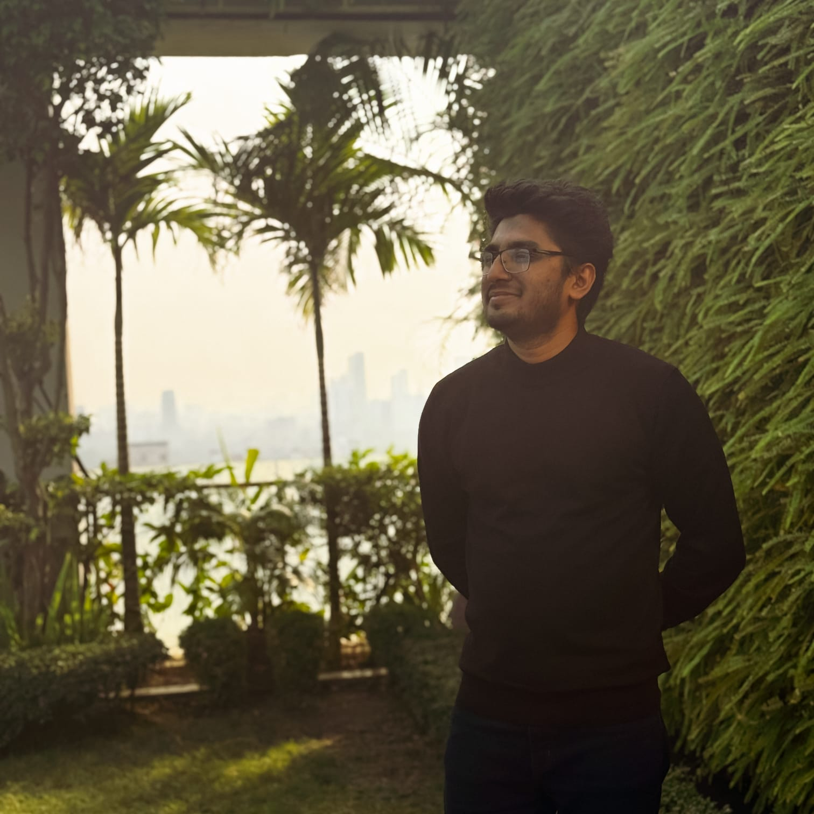

-->CVPR 2026 (Under Review)
arXiv Preprint, 2024
Scientific Reports, 15(1), 4215, 2025
Results in Engineering, Volume 27, 2025
ICEEICT 2024, Dhaka, Bangladesh
IEEE RAAICON 2024, Dhaka, Bangladesh
See my Google Scholar for the full updated list.
Proposing a novel method to determine optimal patch ordering for spatial position embeddings in ViTs, ensuring minimal loss of positional information with computational efficiency.
Investigating selection of unlabeled data points based on proximity to labeled data in feature space to improve prediction confidence in semi-supervised settings.
Developed compact dual-band MIMO antenna for 6G THz communication; implemented meta learner-based stacked generalization ensemble with neural network base learner.
Proposed a shallow multi-axis fusion network with attention mechanism (AGFN) for fusing 2D segmentation results and extracting 3D information. Introduced slice classifier to address class imbalance.
Developed Checkerboard Denoising method for speckle noise removal in OCT images; applied Deep Image Prior for super-resolution in ophthalmology and cardiology imaging.
C, C++, Python, System Verilog, MATLAB, Assembly
PyTorch, TensorFlow, VS Code, Kaggle, Lightning AI
PSpice, Simulink, AutoCAD, Quartus, CISCO
LaTeX